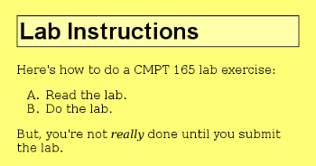

This lab is designed to get you to work more with CSS and to get you to try a validator.
-
Either make a copy of your XHTML from lab 2, or download the file from the lab 2 solutions. Don't overwrite your lab 2 work on the server: make sure you have a new copy. [Note: do not use Internet Explorer for this or other work in this course: it mangles HTML files it downloads. Use Firefox or Safari instead.]
For this part, you will create a new stylesheet for this page. Change the XHTML file so it uses a stylesheet
lab3-style.css(instead oflab2-style.css).Create a CSS file (
lab3-style.css) and make these changes to the appearance of the page:- Set the background colour of the
<body>to light yellow (colour code#ff7), and the text colour to black (colour code#000). - Give the
<body>a margin of two times the font size (2em). - Set the font of the
<h1>to a sans-serif font. - Give the
<h1>a thin black border. You need to set the border's colour, line style, and thickness. - Change the background colour of the
<h1>to a lighter shade of yellow (colour code#ffa). - Change the “numbering” of the list so it uses letters (A, B, C, …). See the
list-style-typeproperty in the reference.
You will probably want to look at the CSS reference as you do this. With this CSS applied, the page should look something like this (depending on your browser, font size, window size, and other factors, of course).
 - Set the background colour of the
-
Download this invalid XHTML file and the image from the page. Add the XHTML 1.0 doctype to the start of this file:
<!DOCTYPE html PUBLIC "-//W3C//DTD XHTML 1.0 Strict//EN" "http://www.w3.org/TR/xhtml1/DTD/xhtml1-strict.dtd">Run it through an XHTML validator (Validator Instructions) and have a look at the error messages. Fix the errors in the markup. (When working with the validator, look at only the first error or two; fix them and try again.)
Once the page validates with no errors, you're done.
-
In your
public_htmldirectory on the course web server, create a directorylab3. Upload all of the files from this lab to that directory.
{kind=link}
Submit the URL of the pages you created to CourSys.